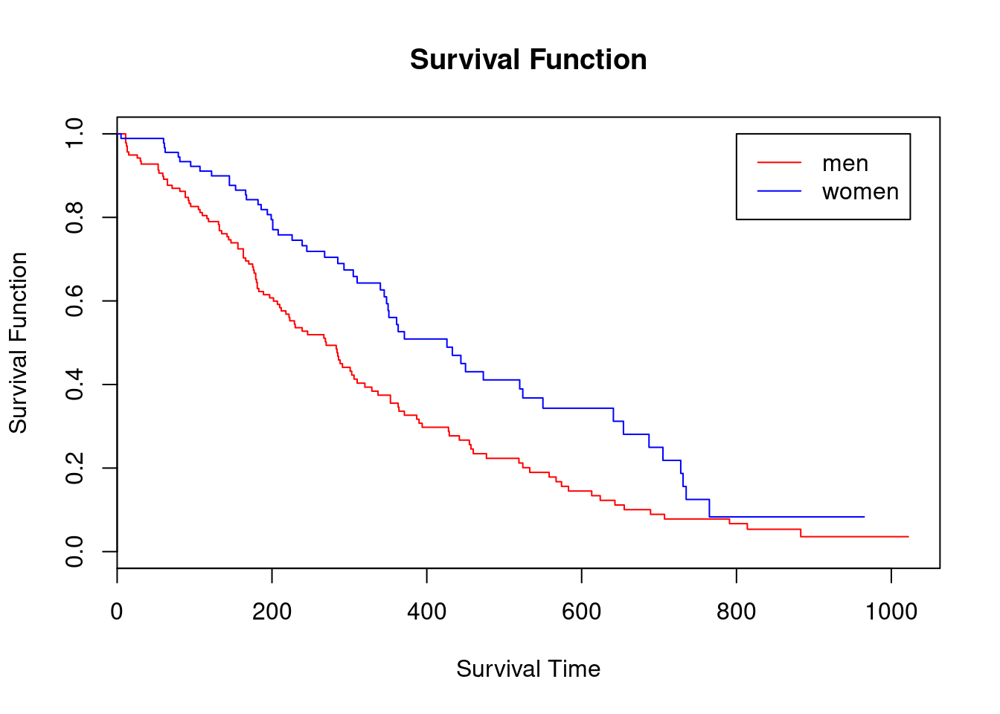
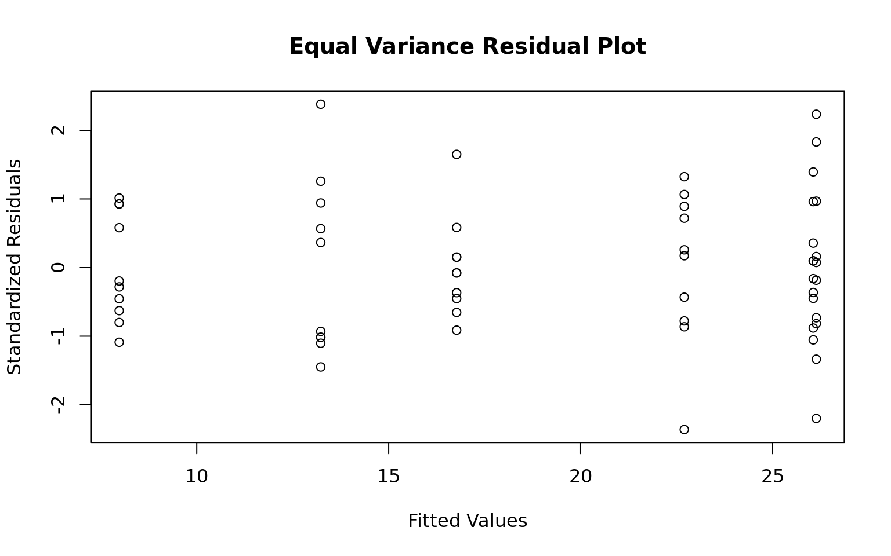
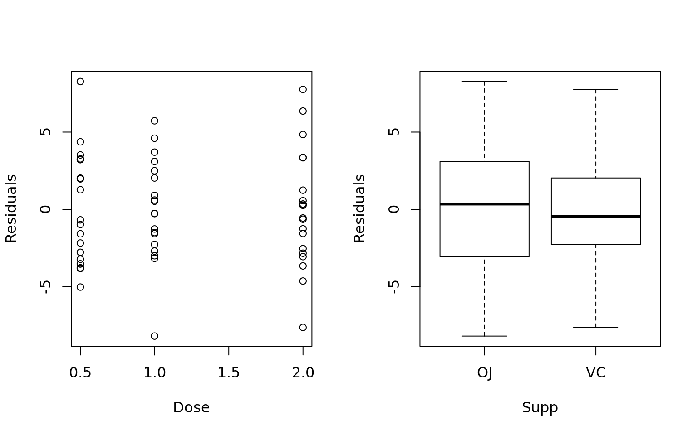
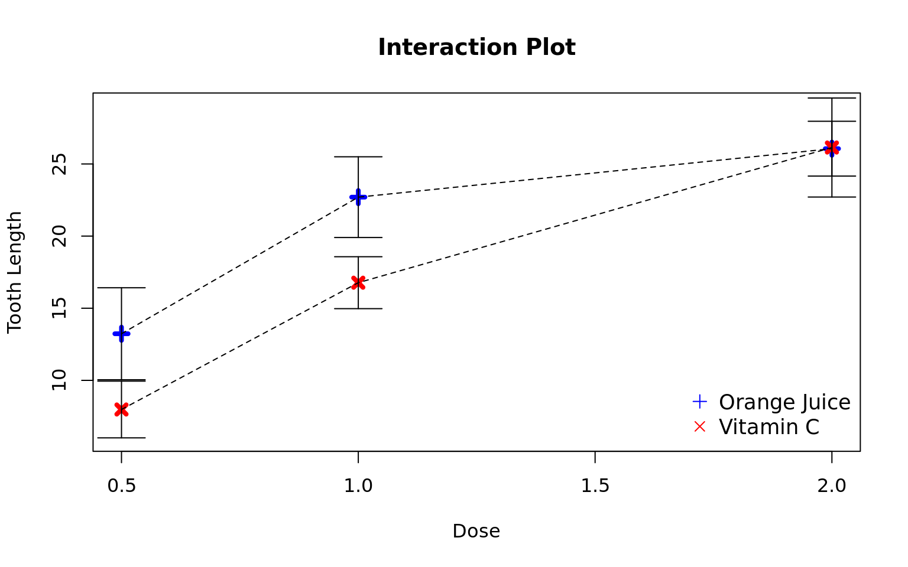
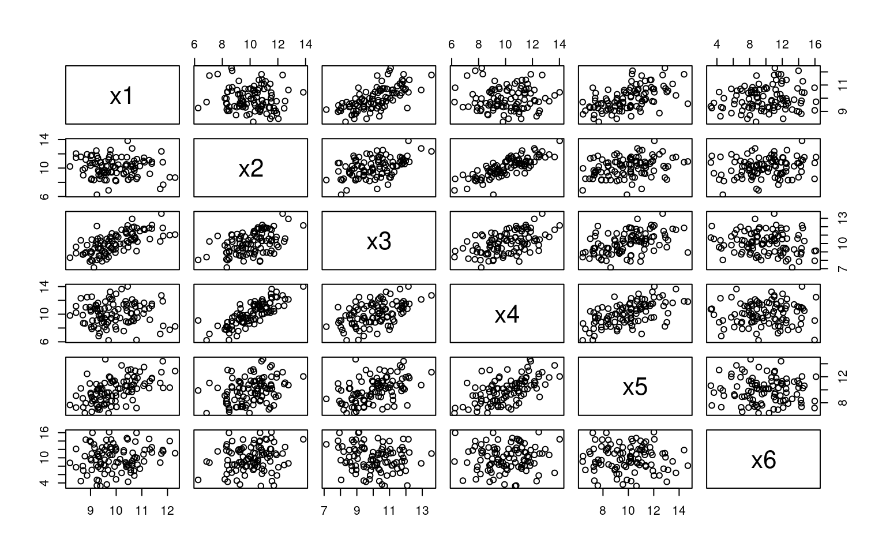
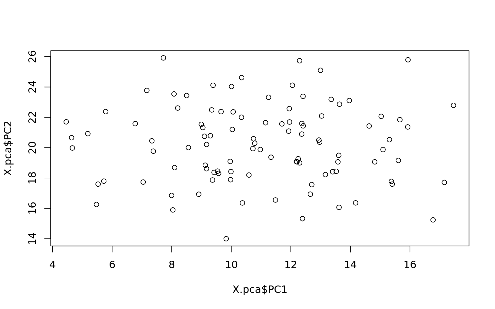
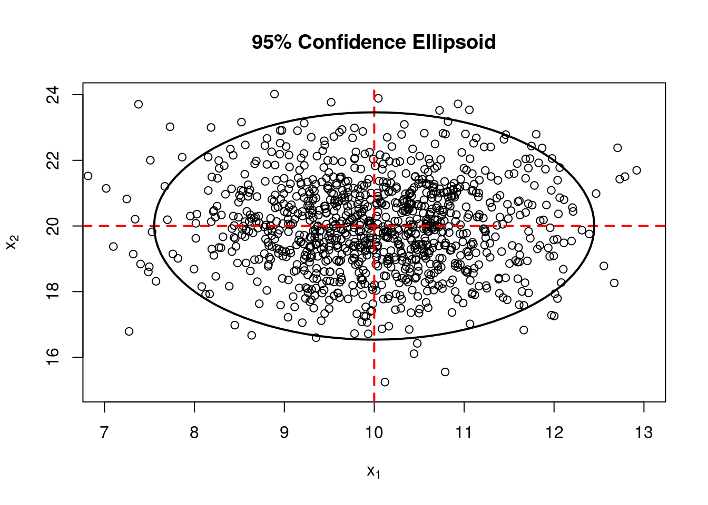

Statistical Methods
Fitting Distributions
Continuous Distributions
- Assessing Distributions Visually
- Formal Tests for Distribution Fit
- Maximum Likelihood calculation
Normal Distribution
library(nortest)
library(MASS)
## Draw some random data
set.seed(10)
x1 = rnorm(20)
## Distribution plots
par(mfrow = c(2, 2))
qqnorm(x1)
qqline(x1)
boxplot(x1, main = "Boxplot")
hist(x1, freq = FALSE, main = "Histogram with Density Curve")
lines(density(x1))
plot(ecdf(x1), main = "Empiracle CDF")
QQ plot indicates the data might be normal by remaining close to the line. The Box plot, histogram, and density curve all support this assumption.
Formal tests all agree that the data are from the normal distribution. Shapiro Wilk is considered the best for test for testing normality.
## Are the data from a normal distribution?
## Shapiro-Wilk Test
shapiro.test(x1)
Shapiro-Wilk normality test
data: x1
W = 0.95643, p-value = 0.4753## Anderson Darling Test
ad.test(x1)
Anderson-Darling normality test
data: x1
A = 0.27523, p-value = 0.6216 ## Kolmogorov-Smirnoff Test
ks.test(x1, 'pnorm')
One-sample Kolmogorov-Smirnov test
data: x1
D = 0.13528, p-value = 0.8109
alternative hypothesis: two-sidedChi-squared Distribution
## Draw some random data
set.seed(10)
x2 = rchisq(n = 20, 2)
## Estimate the DF parameter by maximum likelihood
fitdistr(x = x2, dchisq, start = list(df = 2)) df
1.8140625
(0.3244201)## Input the estimate from MLE
ks.test(x = x2, y = pchisq, df = 1.8140625)
One-sample Kolmogorov-Smirnov test
data: x2
D = 0.15608, p-value = 0.6584
alternative hypothesis: two-sided## Distribution plots
par(mfrow = c(2, 2))
qqplot(qchisq(ppoints(20), df = 1.8140625), x2, main = "QQ Plot")
qqline(x2, distribution = function(p) qchisq(p, df = 1.8140625))
boxplot(x2, main = "Boxplot")
hist(x2, freq = FALSE, main = "Histogram with Density Curve")
lines(density(x2))
plot(ecdf(x2), main = "Empiracle CDF")
Calculating the MLE manually
## Generate data from the exponential distribution with mean = 1/5
set.seed(1000)
X = rexp(n = 20, rate = 5)
## sample size and range of betas to test
n = 20; beta = seq(.01, .5, by = .01)
## Liklihood function
Likelihood = (1/beta)^n * exp(-1/beta * sum(X))
## Maximum Likelihood
(mle = max(Likelihood))[1] 276565.8(mle.beta = beta[which(Likelihood == mle)])[1] 0.2## Statistical test for how well the specified distribution fits the data
ks.test(x = X, y = "pexp", rate = 1/mle.beta)
One-sample Kolmogorov-Smirnov test
data: X
D = 0.1475, p-value = 0.7232
alternative hypothesis: two-sidedpar(mfrow = c(1, 2))
## Plot the maximum likelihood
plot(x = beta, y = Likelihood, type = "l", main = "Maximum Likelihood", lwd = 2)
abline(h = mle, v = mle.beta, lty = 2)
## QQplot for assessing distribution fit visually
qqplot(qexp(ppoints(10), rate = 1/mle.beta), X, xlab = "QQ", main = "QQ Plot")
qqline(X, distribution = function(p) qexp(p, rate = 1/mle.beta))
Discrete Distributions
- Fitting a Binomial model
- Chi-squared goodness of fit test
- Producing a markdown table
A rare but fatal disease of genetic origin occurring chiefly in infants and children is under investigation. An experiment was conducted on a 100 couples who are both carriers of the disease and have 5 children. A researcher recorded the number of children having the disease for each couple.
library(knitr)
## Dataset
(dta = data.frame(
Diseased = c(0, 1, 2, 3, 4, 5),
Count = c(21, 42, 24, 8, 4, 1)
)) Diseased Count
1 0 21
2 1 42
3 2 24
4 3 8
5 4 4
6 5 1## Number of diseased children (d) and the total number of children (c)
(d = sum(apply(X = dta, MARGIN = 1, FUN = function(p) dta$Diseased * dta$Count)[,1]))[1] 135(c = 5 * sum(dta$Count))[1] 500## MLE
(mle = d / c)[1] 0.27## Calculate the expected probabilities and expected diseased children
dta$Exp.Prob = round(dbinom(x = 0:5, size = 5, prob = mle), 4)
dta$Exp.Diseased = with(dta, sum(Count) * Exp.Prob)
dta Diseased Count Exp.Prob Exp.Diseased
1 0 21 0.2073 20.73
2 1 42 0.3834 38.34
3 2 24 0.2836 28.36
4 3 8 0.1049 10.49
5 4 4 0.0194 1.94
6 5 1 0.0014 0.14## Chi-square test requirements:
## 1) all Exp must be > 1
## 2) at most 20% of Exp may be less than 5
##
## So we need to combine counts 4 and 5 and meet these requirements
dta[5, 2:4] = dta[5, 2:4] + dta[6, 2:4]
dta = dta[-6, ]
dta$Diseased = as.character(dta$Diseased)
dta$Diseased[5] = '4 or 5'
## Compute the Chi-Squared Statistic
dta$X.2 = round(with(dta, (Count - Exp.Diseased)^2 / Exp.Diseased), 4)
dta$Diseased = factor(dta$Diseased)
dta Diseased Count Exp.Prob Exp.Diseased X.2
1 0 21 0.2073 20.73 0.0035
2 1 42 0.3834 38.34 0.3494
3 2 24 0.2836 28.36 0.6703
4 3 8 0.1049 10.49 0.5910
5 4 or 5 5 0.0208 2.08 4.0992## Compute the test statistic pvalue
(TS = sum(dta$X.2)); 1 - pchisq(TS, df = 4)[1] 5.7134[1] 0.2215985## Based on the table below we conclude the binomial model is a good fit for the data
##
## Assessment of Chi-squared GOF P-value
## • p-value > .25 ⇒ Excellent fit
## • .15 ≤ p−value < .25 ⇒ Good fit
## • .05 ≤ p−value < .15 ⇒ Moderately Good fit
## • .01 ≤ p−value < .05 ⇒ Poor fit
## • p-value < .01 ⇒ Unacceptable fit
##
## Plot of the data vs model and create a markdown table from the data frame
plot(x = dta$Diseased, y = NULL, xlab = "Diseased Children per Couple",
ylim = c(0, 50), ylab = "Frequency",
axes = FALSE, type = "n", main = "Binomial Model vs Data")
axis(1, labels = dta$Diseased, at = dta$Diseased)
axis(2, labels = seq(0, 50, 10), at = seq(0, 50, 10))
legend("topright", c("Data", "Model"), col = c("blue", "red"), pch = 19, bty = "n")
points(x = dta$Diseased, y = dta$Count, col = "blue", pch = 19, type = "b")
points(x = dta$Diseased, y = dta$Exp.Diseased, col = "red", pch = 19, type = "b")
kable(dta)| Diseased | Count | Exp.Prob | Exp.Diseased | X.2 |
|---|---|---|---|---|
| 0 | 21 | 0.2073 | 20.73 | 0.0035 |
| 1 | 42 | 0.3834 | 38.34 | 0.3494 |
| 2 | 24 | 0.2836 | 28.36 | 0.6703 |
| 3 | 8 | 0.1049 | 10.49 | 0.5910 |
| 4 or 5 | 5 | 0.0208 | 2.08 | 4.0992 |
## Some Conclusions
## Since N is large we can use asymptotic confidence intervals
## A 95% confidence interval for whether a child will have the disease
mle + c(-1, 1) * 1.96 * sqrt(.27 * (1 - .27))/sqrt(100)[1] 0.1829839 0.3570161## What is the probability that a couple will have at least 1 child with the disease?
1 - pbinom(q = 0, size = 5, prob = .27)[1] 0.7926928Hypothesis Testing
- Shapiro Wilks
- One Sample T-Test
- Calculating Power
- Hypothesis Testing
- Sample Size Determination
## Data sample on chick weights
data(chickwts)
head(chickwts) weight feed
1 179 horsebean
2 160 horsebean
3 136 horsebean
4 227 horsebean
5 217 horsebean
6 168 horsebean## Normal reference plot for height
qqnorm(chickwts$weight)
qqline(chickwts$weight)
## Are the data from a normal distribution?
shapiro.test(chickwts$weight)
Shapiro-Wilk normality test
data: chickwts$weight
W = 0.97674, p-value = 0.2101mean(chickwts$weight)[1] 261.3099How does the sample mean compare to a hypothesis test that the true mean is < 260? What is the power of the test?
\[H_0: \mu \ge 260, H_a: \mu \lt 260\]
| Population | Fail to Reject | Reject \(H_0\) |
|---|---|---|
| \(H_0\) is True | Correct | Type I Error |
| \(H_a\) is True | Type II Error | Correct |
## What is the probability of a Type I error if we say the true mean is less than 250?
t.test(chickwts$weight, mu = 250, alternative = "less")
One Sample t-test
data: chickwts$weight
t = 1.2206, df = 70, p-value = 0.8868
alternative hypothesis: true mean is less than 250
95 percent confidence interval:
-Inf 276.7549
sample estimates:
mean of x
261.3099 ## Verify the t statistic and p-value
(ts = (mean(chickwts$weight) - 250) / (sd(chickwts$weight) / sqrt(length(chickwts$weight))))[1] 1.220623pt(ts, df = 70)[1] 0.8868377## What is the probability of a Type I error if we say the true mean is > 245?
t.test(chickwts$weight, mu = 245, alternative = "greater")
One Sample t-test
data: chickwts$weight
t = 1.7603, df = 70, p-value = 0.04137
alternative hypothesis: true mean is greater than 245
95 percent confidence interval:
245.8648 Inf
sample estimates:
mean of x
261.3099 ## Verify the t statistic and p-value
(ts = (mean(chickwts$weight) - 245) / (sd(chickwts$weight) / sqrt(length(chickwts$weight))))[1] 1.7602511 - pt(ts, df = 70)[1] 0.04136678## We have rejected the null hypothesis and said under an alpha of .05 there is enough evidence
## to suppor that the true mean of Chick Weights is > 245
## What is the power of our test?
power.t.test(n = length(chickwts$weight),
delta = abs(mean(chickwts$weight) - 245),
sd = sd(chickwts$weight),
sig.level = .05,
type = "one.sample",
alternative = "one.sided", strict = TRUE)
One-sample t test power calculation
n = 71
delta = 16.30986
sd = 78.0737
sig.level = 0.05
power = 0.5391727
alternative = one.sided## What sample size would we need to have a power of .8?
power.t.test(delta = abs(mean(chickwts$weight) - 245),
sd = sd(chickwts$weight),
sig.level = .05,
power = .8,
type = "one.sample",
alternative = "one.sided", strict = TRUE)
One-sample t test power calculation
n = 143.0323
delta = 16.30986
sd = 78.0737
sig.level = 0.05
power = 0.8
alternative = one.sided## Verify manually
(sd(chickwts$weight)^2 * (qnorm(p = .95) + qnorm(p = .8))^2) / abs(mean(chickwts$weight) - 245)^2[1] 141.6698Parameter Estimation
- Bootstrap Sampling
## Create a mixed Distribution
set.seed(10)
y1 = rnorm(10, 10, 2); y2 = rnorm(10, 15, 1); y3 = rnorm(10, 20, 2)
Y = c(y1, y2, y3)
par(mfrow = c(1, 2))
hist(Y)
plot(density(Y))
## Is Y part of a normal distribution?
shapiro.test(Y)
Shapiro-Wilk normality test
data: Y
W = 0.90712, p-value = 0.0126## Bootstrap simulation to estimate the mean
X = c()
## Draw 10k random samples from Y and calculate the mean
for (i in 1:10000) {
x = sample(Y, length(Y), replace = TRUE)
mu.x = mean(x)
X = c(X, mu.x)
}
par(mfrow = c(1,1))
## Draw a histogram of the bootstrap samples for the sample means
hist(X, breaks = 50, main = "Histogram of X_Bar")
## What is a 95% confidence interval for mu?
sort(X)[c(250, 9750)][1] 12.72430 15.58161Sample Size and Power
Proportions
library(pwr)
## Univariate Proportion
pwr.p.test(h = .25, sig.level = .05, power = .8, alternative = "greater")
proportion power calculation for binomial distribution (arcsine transformation)
h = 0.25
n = 98.92092
sig.level = 0.05
power = 0.8
alternative = greater## Two Proportions (equal n)
pwr.2p.test(h = .25, sig.level = .05, power = .8, alternative = "greater")
Difference of proportion power calculation for binomial distribution (arcsine transformation)
h = 0.25
n = 197.8418
sig.level = 0.05
power = 0.8
alternative = greater
NOTE: same sample sizes## Two Proportions (different n)
pwr.2p2n.test(h = .25, n1 = 100, n2 = 120, sig.level = .05, alternative = "greater")
difference of proportion power calculation for binomial distribution (arcsine transformation)
h = 0.25
n1 = 100
n2 = 120
sig.level = 0.05
power = 0.5798535
alternative = greater
NOTE: different sample sizesT-test
## Equal n
pwr.t.test(d = .5, sig.level = .05, power = .8, type = "one.sample")
One-sample t test power calculation
n = 33.36713
d = 0.5
sig.level = 0.05
power = 0.8
alternative = two.sidedpwr.t.test(d = .5, sig.level = .05, power = .8, type = "two.sample")
Two-sample t test power calculation
n = 63.76561
d = 0.5
sig.level = 0.05
power = 0.8
alternative = two.sided
NOTE: n is number in *each* grouppwr.t.test(d = .5, sig.level = .05, power = .8, type = "paired")
Paired t test power calculation
n = 33.36713
d = 0.5
sig.level = 0.05
power = 0.8
alternative = two.sided
NOTE: n is number of *pairs*## Different n
pwr.t2n.test(n1 = 10, n2 = 15, d = 1, sig.level = .05)
t test power calculation
n1 = 10
n2 = 15
d = 1
sig.level = 0.05
power = 0.6503918
alternative = two.sidedChi-square
pwr.chisq.test(w = .25, df = 4, sig.level = .05, power = .8)
Chi squared power calculation
w = 0.25
N = 190.9646
df = 4
sig.level = 0.05
power = 0.8
NOTE: N is the number of observationsANOVA
pwr.anova.test(k = 5, n = 10, f = .5, sig.level = .05)
Balanced one-way analysis of variance power calculation
k = 5
n = 10
f = 0.5
sig.level = 0.05
power = 0.7730915
NOTE: n is number in each groupSurvival Analysis
library(survival)
summary(lung) inst time status age
Min. : 1.00 Min. : 5.0 Min. :1.000 Min. :39.00
1st Qu.: 3.00 1st Qu.: 166.8 1st Qu.:1.000 1st Qu.:56.00
Median :11.00 Median : 255.5 Median :2.000 Median :63.00
Mean :11.09 Mean : 305.2 Mean :1.724 Mean :62.45
3rd Qu.:16.00 3rd Qu.: 396.5 3rd Qu.:2.000 3rd Qu.:69.00
Max. :33.00 Max. :1022.0 Max. :2.000 Max. :82.00
NA's :1
sex ph.ecog ph.karno pat.karno
Min. :1.000 Min. :0.0000 Min. : 50.00 Min. : 30.00
1st Qu.:1.000 1st Qu.:0.0000 1st Qu.: 75.00 1st Qu.: 70.00
Median :1.000 Median :1.0000 Median : 80.00 Median : 80.00
Mean :1.395 Mean :0.9515 Mean : 81.94 Mean : 79.96
3rd Qu.:2.000 3rd Qu.:1.0000 3rd Qu.: 90.00 3rd Qu.: 90.00
Max. :2.000 Max. :3.0000 Max. :100.00 Max. :100.00
NA's :1 NA's :1 NA's :3
meal.cal wt.loss
Min. : 96.0 Min. :-24.000
1st Qu.: 635.0 1st Qu.: 0.000
Median : 975.0 Median : 7.000
Mean : 928.8 Mean : 9.832
3rd Qu.:1150.0 3rd Qu.: 15.750
Max. :2600.0 Max. : 68.000
NA's :47 NA's :14 mdl = survfit(Surv(time, status) ~ 1, data = lung)
plot(mdl, conf.int = FALSE,
main="Kaplan-Meier Estimator of Survival Function",
xlab="Survival Time",
ylab="Survival Function")
summary(mdl)Call: survfit(formula = Surv(time, status) ~ 1, data = lung)
time n.risk n.event survival std.err lower 95% CI upper 95% CI
5 228 1 0.9956 0.00438 0.9871 1.000
11 227 3 0.9825 0.00869 0.9656 1.000
12 224 1 0.9781 0.00970 0.9592 0.997
13 223 2 0.9693 0.01142 0.9472 0.992
15 221 1 0.9649 0.01219 0.9413 0.989
26 220 1 0.9605 0.01290 0.9356 0.986
30 219 1 0.9561 0.01356 0.9299 0.983
31 218 1 0.9518 0.01419 0.9243 0.980
53 217 2 0.9430 0.01536 0.9134 0.974
54 215 1 0.9386 0.01590 0.9079 0.970
59 214 1 0.9342 0.01642 0.9026 0.967
60 213 2 0.9254 0.01740 0.8920 0.960
61 211 1 0.9211 0.01786 0.8867 0.957
62 210 1 0.9167 0.01830 0.8815 0.953
65 209 2 0.9079 0.01915 0.8711 0.946
71 207 1 0.9035 0.01955 0.8660 0.943
79 206 1 0.8991 0.01995 0.8609 0.939
81 205 2 0.8904 0.02069 0.8507 0.932
88 203 2 0.8816 0.02140 0.8406 0.925
92 201 1 0.8772 0.02174 0.8356 0.921
93 199 1 0.8728 0.02207 0.8306 0.917
95 198 2 0.8640 0.02271 0.8206 0.910
105 196 1 0.8596 0.02302 0.8156 0.906
107 194 2 0.8507 0.02362 0.8056 0.898
110 192 1 0.8463 0.02391 0.8007 0.894
116 191 1 0.8418 0.02419 0.7957 0.891
118 190 1 0.8374 0.02446 0.7908 0.887
122 189 1 0.8330 0.02473 0.7859 0.883
131 188 1 0.8285 0.02500 0.7810 0.879
132 187 2 0.8197 0.02550 0.7712 0.871
135 185 1 0.8153 0.02575 0.7663 0.867
142 184 1 0.8108 0.02598 0.7615 0.863
144 183 1 0.8064 0.02622 0.7566 0.859
145 182 2 0.7975 0.02667 0.7469 0.852
147 180 1 0.7931 0.02688 0.7421 0.848
153 179 1 0.7887 0.02710 0.7373 0.844
156 178 2 0.7798 0.02751 0.7277 0.836
163 176 3 0.7665 0.02809 0.7134 0.824
166 173 2 0.7577 0.02845 0.7039 0.816
167 171 1 0.7532 0.02863 0.6991 0.811
170 170 1 0.7488 0.02880 0.6944 0.807
175 167 1 0.7443 0.02898 0.6896 0.803
176 165 1 0.7398 0.02915 0.6848 0.799
177 164 1 0.7353 0.02932 0.6800 0.795
179 162 2 0.7262 0.02965 0.6704 0.787
180 160 1 0.7217 0.02981 0.6655 0.783
181 159 2 0.7126 0.03012 0.6559 0.774
182 157 1 0.7081 0.03027 0.6511 0.770
183 156 1 0.7035 0.03041 0.6464 0.766
186 154 1 0.6989 0.03056 0.6416 0.761
189 152 1 0.6943 0.03070 0.6367 0.757
194 149 1 0.6897 0.03085 0.6318 0.753
197 147 1 0.6850 0.03099 0.6269 0.749
199 145 1 0.6803 0.03113 0.6219 0.744
201 144 2 0.6708 0.03141 0.6120 0.735
202 142 1 0.6661 0.03154 0.6071 0.731
207 139 1 0.6613 0.03168 0.6020 0.726
208 138 1 0.6565 0.03181 0.5970 0.722
210 137 1 0.6517 0.03194 0.5920 0.717
212 135 1 0.6469 0.03206 0.5870 0.713
218 134 1 0.6421 0.03218 0.5820 0.708
222 132 1 0.6372 0.03231 0.5769 0.704
223 130 1 0.6323 0.03243 0.5718 0.699
226 126 1 0.6273 0.03256 0.5666 0.694
229 125 1 0.6223 0.03268 0.5614 0.690
230 124 1 0.6172 0.03280 0.5562 0.685
239 121 2 0.6070 0.03304 0.5456 0.675
245 117 1 0.6019 0.03316 0.5402 0.670
246 116 1 0.5967 0.03328 0.5349 0.666
267 112 1 0.5913 0.03341 0.5294 0.661
268 111 1 0.5860 0.03353 0.5239 0.656
269 110 1 0.5807 0.03364 0.5184 0.651
270 108 1 0.5753 0.03376 0.5128 0.645
283 104 1 0.5698 0.03388 0.5071 0.640
284 103 1 0.5642 0.03400 0.5014 0.635
285 101 2 0.5531 0.03424 0.4899 0.624
286 99 1 0.5475 0.03434 0.4841 0.619
288 98 1 0.5419 0.03444 0.4784 0.614
291 97 1 0.5363 0.03454 0.4727 0.608
293 94 1 0.5306 0.03464 0.4669 0.603
301 91 1 0.5248 0.03475 0.4609 0.597
303 89 1 0.5189 0.03485 0.4549 0.592
305 87 1 0.5129 0.03496 0.4488 0.586
306 86 1 0.5070 0.03506 0.4427 0.581
310 85 2 0.4950 0.03523 0.4306 0.569
320 82 1 0.4890 0.03532 0.4244 0.563
329 81 1 0.4830 0.03539 0.4183 0.558
337 79 1 0.4768 0.03547 0.4121 0.552
340 78 1 0.4707 0.03554 0.4060 0.546
345 77 1 0.4646 0.03560 0.3998 0.540
348 76 1 0.4585 0.03565 0.3937 0.534
350 75 1 0.4524 0.03569 0.3876 0.528
351 74 1 0.4463 0.03573 0.3815 0.522
353 73 2 0.4340 0.03578 0.3693 0.510
361 70 1 0.4278 0.03581 0.3631 0.504
363 69 2 0.4154 0.03583 0.3508 0.492
364 67 1 0.4092 0.03582 0.3447 0.486
371 65 2 0.3966 0.03581 0.3323 0.473
387 60 1 0.3900 0.03582 0.3258 0.467
390 59 1 0.3834 0.03582 0.3193 0.460
394 58 1 0.3768 0.03580 0.3128 0.454
426 55 1 0.3700 0.03580 0.3060 0.447
428 54 1 0.3631 0.03579 0.2993 0.440
429 53 1 0.3563 0.03576 0.2926 0.434
433 52 1 0.3494 0.03573 0.2860 0.427
442 51 1 0.3426 0.03568 0.2793 0.420
444 50 1 0.3357 0.03561 0.2727 0.413
450 48 1 0.3287 0.03555 0.2659 0.406
455 47 1 0.3217 0.03548 0.2592 0.399
457 46 1 0.3147 0.03539 0.2525 0.392
460 44 1 0.3076 0.03530 0.2456 0.385
473 43 1 0.3004 0.03520 0.2388 0.378
477 42 1 0.2933 0.03508 0.2320 0.371
519 39 1 0.2857 0.03498 0.2248 0.363
520 38 1 0.2782 0.03485 0.2177 0.356
524 37 2 0.2632 0.03455 0.2035 0.340
533 34 1 0.2554 0.03439 0.1962 0.333
550 32 1 0.2475 0.03423 0.1887 0.325
558 30 1 0.2392 0.03407 0.1810 0.316
567 28 1 0.2307 0.03391 0.1729 0.308
574 27 1 0.2221 0.03371 0.1650 0.299
583 26 1 0.2136 0.03348 0.1571 0.290
613 24 1 0.2047 0.03325 0.1489 0.281
624 23 1 0.1958 0.03297 0.1407 0.272
641 22 1 0.1869 0.03265 0.1327 0.263
643 21 1 0.1780 0.03229 0.1247 0.254
654 20 1 0.1691 0.03188 0.1169 0.245
655 19 1 0.1602 0.03142 0.1091 0.235
687 18 1 0.1513 0.03090 0.1014 0.226
689 17 1 0.1424 0.03034 0.0938 0.216
705 16 1 0.1335 0.02972 0.0863 0.207
707 15 1 0.1246 0.02904 0.0789 0.197
728 14 1 0.1157 0.02830 0.0716 0.187
731 13 1 0.1068 0.02749 0.0645 0.177
735 12 1 0.0979 0.02660 0.0575 0.167
765 10 1 0.0881 0.02568 0.0498 0.156
791 9 1 0.0783 0.02462 0.0423 0.145
814 7 1 0.0671 0.02351 0.0338 0.133
883 4 1 0.0503 0.02285 0.0207 0.123mdl = survfit(Surv(time, status) ~ strata(sex), data = lung)
summary(mdl)Call: survfit(formula = Surv(time, status) ~ strata(sex), data = lung)
strata(sex)=sex=1
time n.risk n.event survival std.err lower 95% CI upper 95% CI
11 138 3 0.9783 0.0124 0.9542 1.000
12 135 1 0.9710 0.0143 0.9434 0.999
13 134 2 0.9565 0.0174 0.9231 0.991
15 132 1 0.9493 0.0187 0.9134 0.987
26 131 1 0.9420 0.0199 0.9038 0.982
30 130 1 0.9348 0.0210 0.8945 0.977
31 129 1 0.9275 0.0221 0.8853 0.972
53 128 2 0.9130 0.0240 0.8672 0.961
54 126 1 0.9058 0.0249 0.8583 0.956
59 125 1 0.8986 0.0257 0.8496 0.950
60 124 1 0.8913 0.0265 0.8409 0.945
65 123 2 0.8768 0.0280 0.8237 0.933
71 121 1 0.8696 0.0287 0.8152 0.928
81 120 1 0.8623 0.0293 0.8067 0.922
88 119 2 0.8478 0.0306 0.7900 0.910
92 117 1 0.8406 0.0312 0.7817 0.904
93 116 1 0.8333 0.0317 0.7734 0.898
95 115 1 0.8261 0.0323 0.7652 0.892
105 114 1 0.8188 0.0328 0.7570 0.886
107 113 1 0.8116 0.0333 0.7489 0.880
110 112 1 0.8043 0.0338 0.7408 0.873
116 111 1 0.7971 0.0342 0.7328 0.867
118 110 1 0.7899 0.0347 0.7247 0.861
131 109 1 0.7826 0.0351 0.7167 0.855
132 108 2 0.7681 0.0359 0.7008 0.842
135 106 1 0.7609 0.0363 0.6929 0.835
142 105 1 0.7536 0.0367 0.6851 0.829
144 104 1 0.7464 0.0370 0.6772 0.823
147 103 1 0.7391 0.0374 0.6694 0.816
156 102 2 0.7246 0.0380 0.6538 0.803
163 100 3 0.7029 0.0389 0.6306 0.783
166 97 1 0.6957 0.0392 0.6230 0.777
170 96 1 0.6884 0.0394 0.6153 0.770
175 94 1 0.6811 0.0397 0.6076 0.763
176 93 1 0.6738 0.0399 0.5999 0.757
177 92 1 0.6664 0.0402 0.5922 0.750
179 91 2 0.6518 0.0406 0.5769 0.736
180 89 1 0.6445 0.0408 0.5693 0.730
181 88 2 0.6298 0.0412 0.5541 0.716
183 86 1 0.6225 0.0413 0.5466 0.709
189 83 1 0.6150 0.0415 0.5388 0.702
197 80 1 0.6073 0.0417 0.5309 0.695
202 78 1 0.5995 0.0419 0.5228 0.687
207 77 1 0.5917 0.0420 0.5148 0.680
210 76 1 0.5839 0.0422 0.5068 0.673
212 75 1 0.5762 0.0424 0.4988 0.665
218 74 1 0.5684 0.0425 0.4909 0.658
222 72 1 0.5605 0.0426 0.4829 0.651
223 70 1 0.5525 0.0428 0.4747 0.643
229 67 1 0.5442 0.0429 0.4663 0.635
230 66 1 0.5360 0.0431 0.4579 0.627
239 64 1 0.5276 0.0432 0.4494 0.619
246 63 1 0.5192 0.0433 0.4409 0.611
267 61 1 0.5107 0.0434 0.4323 0.603
269 60 1 0.5022 0.0435 0.4238 0.595
270 59 1 0.4937 0.0436 0.4152 0.587
283 57 1 0.4850 0.0437 0.4065 0.579
284 56 1 0.4764 0.0438 0.3979 0.570
285 54 1 0.4676 0.0438 0.3891 0.562
286 53 1 0.4587 0.0439 0.3803 0.553
288 52 1 0.4499 0.0439 0.3716 0.545
291 51 1 0.4411 0.0439 0.3629 0.536
301 48 1 0.4319 0.0440 0.3538 0.527
303 46 1 0.4225 0.0440 0.3445 0.518
306 44 1 0.4129 0.0440 0.3350 0.509
310 43 1 0.4033 0.0441 0.3256 0.500
320 42 1 0.3937 0.0440 0.3162 0.490
329 41 1 0.3841 0.0440 0.3069 0.481
337 40 1 0.3745 0.0439 0.2976 0.471
353 39 2 0.3553 0.0437 0.2791 0.452
363 37 1 0.3457 0.0436 0.2700 0.443
364 36 1 0.3361 0.0434 0.2609 0.433
371 35 1 0.3265 0.0432 0.2519 0.423
387 34 1 0.3169 0.0430 0.2429 0.413
390 33 1 0.3073 0.0428 0.2339 0.404
394 32 1 0.2977 0.0425 0.2250 0.394
428 29 1 0.2874 0.0423 0.2155 0.383
429 28 1 0.2771 0.0420 0.2060 0.373
442 27 1 0.2669 0.0417 0.1965 0.362
455 25 1 0.2562 0.0413 0.1868 0.351
457 24 1 0.2455 0.0410 0.1770 0.341
460 22 1 0.2344 0.0406 0.1669 0.329
477 21 1 0.2232 0.0402 0.1569 0.318
519 20 1 0.2121 0.0397 0.1469 0.306
524 19 1 0.2009 0.0391 0.1371 0.294
533 18 1 0.1897 0.0385 0.1275 0.282
558 17 1 0.1786 0.0378 0.1179 0.270
567 16 1 0.1674 0.0371 0.1085 0.258
574 15 1 0.1562 0.0362 0.0992 0.246
583 14 1 0.1451 0.0353 0.0900 0.234
613 13 1 0.1339 0.0343 0.0810 0.221
624 12 1 0.1228 0.0332 0.0722 0.209
643 11 1 0.1116 0.0320 0.0636 0.196
655 10 1 0.1004 0.0307 0.0552 0.183
689 9 1 0.0893 0.0293 0.0470 0.170
707 8 1 0.0781 0.0276 0.0390 0.156
791 7 1 0.0670 0.0259 0.0314 0.143
814 5 1 0.0536 0.0239 0.0223 0.128
883 3 1 0.0357 0.0216 0.0109 0.117
strata(sex)=sex=2
time n.risk n.event survival std.err lower 95% CI upper 95% CI
5 90 1 0.9889 0.0110 0.9675 1.000
60 89 1 0.9778 0.0155 0.9478 1.000
61 88 1 0.9667 0.0189 0.9303 1.000
62 87 1 0.9556 0.0217 0.9139 0.999
79 86 1 0.9444 0.0241 0.8983 0.993
81 85 1 0.9333 0.0263 0.8832 0.986
95 83 1 0.9221 0.0283 0.8683 0.979
107 81 1 0.9107 0.0301 0.8535 0.972
122 80 1 0.8993 0.0318 0.8390 0.964
145 79 2 0.8766 0.0349 0.8108 0.948
153 77 1 0.8652 0.0362 0.7970 0.939
166 76 1 0.8538 0.0375 0.7834 0.931
167 75 1 0.8424 0.0387 0.7699 0.922
182 71 1 0.8305 0.0399 0.7559 0.913
186 70 1 0.8187 0.0411 0.7420 0.903
194 68 1 0.8066 0.0422 0.7280 0.894
199 67 1 0.7946 0.0432 0.7142 0.884
201 66 2 0.7705 0.0452 0.6869 0.864
208 62 1 0.7581 0.0461 0.6729 0.854
226 59 1 0.7452 0.0471 0.6584 0.843
239 57 1 0.7322 0.0480 0.6438 0.833
245 54 1 0.7186 0.0490 0.6287 0.821
268 51 1 0.7045 0.0501 0.6129 0.810
285 47 1 0.6895 0.0512 0.5962 0.798
293 45 1 0.6742 0.0523 0.5791 0.785
305 43 1 0.6585 0.0534 0.5618 0.772
310 42 1 0.6428 0.0544 0.5447 0.759
340 39 1 0.6264 0.0554 0.5267 0.745
345 38 1 0.6099 0.0563 0.5089 0.731
348 37 1 0.5934 0.0572 0.4913 0.717
350 36 1 0.5769 0.0579 0.4739 0.702
351 35 1 0.5604 0.0586 0.4566 0.688
361 33 1 0.5434 0.0592 0.4390 0.673
363 32 1 0.5265 0.0597 0.4215 0.658
371 30 1 0.5089 0.0603 0.4035 0.642
426 26 1 0.4893 0.0610 0.3832 0.625
433 25 1 0.4698 0.0617 0.3632 0.608
444 24 1 0.4502 0.0621 0.3435 0.590
450 23 1 0.4306 0.0624 0.3241 0.572
473 22 1 0.4110 0.0626 0.3050 0.554
520 19 1 0.3894 0.0629 0.2837 0.534
524 18 1 0.3678 0.0630 0.2628 0.515
550 15 1 0.3433 0.0634 0.2390 0.493
641 11 1 0.3121 0.0649 0.2076 0.469
654 10 1 0.2808 0.0655 0.1778 0.443
687 9 1 0.2496 0.0652 0.1496 0.417
705 8 1 0.2184 0.0641 0.1229 0.388
728 7 1 0.1872 0.0621 0.0978 0.359
731 6 1 0.1560 0.0590 0.0743 0.328
735 5 1 0.1248 0.0549 0.0527 0.295
765 3 1 0.0832 0.0499 0.0257 0.270plot(mdl, conf.int = FALSE, col = c(2,4),
main="Survival Function",
xlab="Survival Time",
ylab="Survival Function")
legend(800, 1, c("men", "women"), lty = c(1, 1), col = c(2, 4))
summary(survreg(Surv(time, status) ~ ph.ecog + age + strata(sex), lung))
Call:
survreg(formula = Surv(time, status) ~ ph.ecog + age + strata(sex),
data = lung)
Value Std. Error z p
(Intercept) 6.73235 0.42396 15.880 8.75e-57
ph.ecog -0.32443 0.08649 -3.751 1.76e-04
age -0.00581 0.00693 -0.838 4.02e-01
sex=1 -0.24408 0.07920 -3.082 2.06e-03
sex=2 -0.42345 0.10669 -3.969 7.22e-05
Scale:
sex=1 sex=2
0.783 0.655
Weibull distribution
Loglik(model)= -1137.3 Loglik(intercept only)= -1146.2
Chisq= 17.8 on 2 degrees of freedom, p= 0.00014
Number of Newton-Raphson Iterations: 5
n=227 (1 observation deleted due to missingness)Experimental Design
Completely Random Design
The response is the length of odontoblasts (cells responsible for tooth growth) in 60 guinea pigs. Each animal received one of three dose levels of vitamin C (0.5, 1, and 2 mg/day) by one of two delivery methods, orange juice or ascorbic acid (a form of vitamin C and coded as VC).
Treatment Structure: 2 x 3 Factorial Treatment, both Fixed
- Model: \(y_{ijk} = \mu + \alpha_i + \beta_j + \alpha \beta_{ij} + e_{ijk}\)
- Treatments: \(\alpha_i = \text{supp, } \beta_j = \text{dose}\)
- Fixed Effects: \(\alpha_1 = \beta_1 = \alpha \beta_{1j} = \alpha \beta_{i1} = 0\)
Random Effects: \(e_{ijk} = N(0, \sigma^2_e)\)
library(lsmeans)
library(reshape2)
library(car)
library(plyr)
data("ToothGrowth")
## Data is numeric, but we need to force it to be a factor for the model
ToothGrowth$dose.factor = as.factor(ToothGrowth$dose)
summary(ToothGrowth) len supp dose dose.factor
Min. : 4.20 OJ:30 Min. :0.500 0.5:20
1st Qu.:13.07 VC:30 1st Qu.:0.500 1 :20
Median :19.25 Median :1.000 2 :20
Mean :18.81 Mean :1.167
3rd Qu.:25.27 3rd Qu.:2.000
Max. :33.90 Max. :2.000 ## Even observations per treatment group
table(ToothGrowth$supp, ToothGrowth$dose)
0.5 1 2
OJ 10 10 10
VC 10 10 10## ANOVA model
mdl = lm(len ~ supp * dose.factor, data = ToothGrowth)
anova(mdl)Analysis of Variance Table
Response: len
Df Sum Sq Mean Sq F value Pr(>F)
supp 1 205.35 205.35 15.572 0.0002312 ***
dose.factor 2 2426.43 1213.22 92.000 < 2.2e-16 ***
supp:dose.factor 2 108.32 54.16 4.107 0.0218603 *
Residuals 54 712.11 13.19
---
Signif. codes: 0 '***' 0.001 '**' 0.01 '*' 0.05 '.' 0.1 ' ' 1## Least Squares Means
lsmeans(mdl, specs = c("supp", "dose.factor")) supp dose.factor lsmean SE df lower.CL upper.CL
OJ 0.5 13.23 1.148353 54 10.927691 15.53231
VC 0.5 7.98 1.148353 54 5.677691 10.28231
OJ 1 22.70 1.148353 54 20.397691 25.00231
VC 1 16.77 1.148353 54 14.467691 19.07231
OJ 2 26.06 1.148353 54 23.757691 28.36231
VC 2 26.14 1.148353 54 23.837691 28.44231
Confidence level used: 0.95 ## Differences in Means
TukeyHSD(aov(mdl)) Tukey multiple comparisons of means
95% family-wise confidence level
Fit: aov(formula = mdl)
$supp
diff lwr upr p adj
VC-OJ -3.7 -5.579828 -1.820172 0.0002312
$dose.factor
diff lwr upr p adj
1-0.5 9.130 6.362488 11.897512 0.0e+00
2-0.5 15.495 12.727488 18.262512 0.0e+00
2-1 6.365 3.597488 9.132512 2.7e-06
$`supp:dose.factor`
diff lwr upr p adj
VC:0.5-OJ:0.5 -5.25 -10.048124 -0.4518762 0.0242521
OJ:1-OJ:0.5 9.47 4.671876 14.2681238 0.0000046
VC:1-OJ:0.5 3.54 -1.258124 8.3381238 0.2640208
OJ:2-OJ:0.5 12.83 8.031876 17.6281238 0.0000000
VC:2-OJ:0.5 12.91 8.111876 17.7081238 0.0000000
OJ:1-VC:0.5 14.72 9.921876 19.5181238 0.0000000
VC:1-VC:0.5 8.79 3.991876 13.5881238 0.0000210
OJ:2-VC:0.5 18.08 13.281876 22.8781238 0.0000000
VC:2-VC:0.5 18.16 13.361876 22.9581238 0.0000000
VC:1-OJ:1 -5.93 -10.728124 -1.1318762 0.0073930
OJ:2-OJ:1 3.36 -1.438124 8.1581238 0.3187361
VC:2-OJ:1 3.44 -1.358124 8.2381238 0.2936430
OJ:2-VC:1 9.29 4.491876 14.0881238 0.0000069
VC:2-VC:1 9.37 4.571876 14.1681238 0.0000058
VC:2-OJ:2 0.08 -4.718124 4.8781238 1.0000000Are the necessary conditions for hypothesis testing present?
- Normality: Residuals appear normally distributed per the residual normal reference plot and shapiro-wilks test
- Equal Variance: Brown-Forsythe-Levene test and residual plot supports equal variance
- Independence: No correlation in the residuals per the Durbin Watson test and plots of variables against residuals
Conditions for hypothesis testing appears to be satisfied
## Normality of Residuals
shapiro.test(mdl$residuals); qqnorm(mdl$residuals); qqline(mdl$residuals)
Shapiro-Wilk normality test
data: mdl$residuals
W = 0.98499, p-value = 0.6694
## Equal Variance of Residuals
leveneTest(mdl)Levene's Test for Homogeneity of Variance (center = median)
Df F value Pr(>F)
group 5 1.7086 0.1484
54 plot(x = mdl$fitted.values, y = (mdl$residual - mean(mdl$residuals))/sd(mdl$residuals),
xlab = "Fitted Values", ylab = "Standardized Residuals",
main = "Equal Variance Residual Plot")
## Independence of Residuals
par(mfrow = c(1, 2))
plot(ToothGrowth$dose, mdl$residuals, xlab = "Dose", ylab = "Residuals")
plot(ToothGrowth$supp, mdl$residuals, xlab = "Supp", ylab = "Residuals")
## Test for correlation in the residuals
durbinWatsonTest(mdl) lag Autocorrelation D-W Statistic p-value
1 -0.02932541 2.025437 0.522
Alternative hypothesis: rho != 0- Group doses so that each dose is not statistically different than any other dose in the group:
- The interaction between dose and supp are significant so we need to assess the differences in dose per each level of supp.
- OJ: {.5}, {1, 2}
- VC: {.5}, {1}, {2}
- Group supps so that each supp is not statistically different than any other supp in the group:
- The interaction is significant so we need to assess the supps at each level of dose
- .5: {OJ}, {VC}
- 1: {OJ}, {VC}
- 2: {OJ, VC}

Random Complete Block Design
An experiment was conducted to compare four different pre-planting treatments for soybeen seeds. A fifth treatment, consisting of not treating the seeds was used as a control. The experimental area consisted of four fields. There are notable differences in the fields. Each field was divided into five plots and one of the treatments was randomly assigned to a plot within each field.
- Treatment Structure: 1 Single Treatment with 5 levels
Response: The number of plants that failed to emerge out of 100 seeds planted per plot.
- Model: \(y_{ij} = \mu + \alpha_i + \beta_j + e_{ij}\)
- Treatments: \(\alpha_i = \text{Seed, } \beta_j = \text{Field, } \alpha_5 = \text{Control}\)
- Fixed Effects: \(\alpha_5 = \beta_1 = 0\)
Random Effects: \(e_{ij} = N(0, \sigma^2_e)\)
| Treatment | Field.1 | Field.2 | Field.3 | Field.4 |
|---|---|---|---|---|
| Avasan | 2 | 5 | 7 | 11 |
| Spergon | 4 | 10 | 9 | 8 |
| Semaesan | 3 | 6 | 9 | 10 |
| Fermate | 9 | 3 | 5 | 5 |
| Control | 8 | 11 | 12 | 13 |
## Make the control treatment the default level
soy$Treatment = relevel(soy$Treatment, ref = "Control")
## We only have one rep per treatment so there are not enough DF to measure the interaction
mdl = lm(Count ~ Field + Treatment, data = soy)
anova(mdl)Analysis of Variance Table
Response: Count
Df Sum Sq Mean Sq F value Pr(>F)
Field 3 49.8 16.6000 2.5971 0.10070
Treatment 4 72.5 18.1250 2.8357 0.07227 .
Residuals 12 76.7 6.3917
---
Signif. codes: 0 '***' 0.001 '**' 0.01 '*' 0.05 '.' 0.1 ' ' 10.0.0.1 Comparison of means vs control
Since we have a control variable we want to know if any of the treatment means are significantly lower than the control mean.
library(multcomp)
Dunnet = glht(mdl, linfct = mcp(Treatment = "Dunnet"), alternative = "less")
summary(Dunnet)
Simultaneous Tests for General Linear Hypotheses
Multiple Comparisons of Means: Dunnett Contrasts
Fit: lm(formula = Count ~ Field + Treatment, data = soy)
Linear Hypotheses:
Estimate Std. Error t value Pr(<t)
Avasan - Control >= 0 -4.750 1.788 -2.657 0.0327 *
Fermate - Control >= 0 -5.500 1.788 -3.077 0.0153 *
Semaesan - Control >= 0 -4.000 1.788 -2.238 0.0668 .
Spergon - Control >= 0 -3.250 1.788 -1.818 0.1312
---
Signif. codes: 0 '***' 0.001 '**' 0.01 '*' 0.05 '.' 0.1 ' ' 1
(Adjusted p values reported -- single-step method)We have significant evidence that only Avasan and Fermate are significantly lower than the control. Are they significantly different from each other?
TukeyHSD(aov(mdl)) Tukey multiple comparisons of means
95% family-wise confidence level
Fit: aov(formula = mdl)
$Field
diff lwr upr p adj
Field.2-Field.1 1.8 -2.9471482 6.547148 0.6814523
Field.3-Field.1 3.2 -1.5471482 7.947148 0.2406905
Field.4-Field.1 4.2 -0.5471482 8.947148 0.0895218
Field.3-Field.2 1.4 -3.3471482 6.147148 0.8173180
Field.4-Field.2 2.4 -2.3471482 7.147148 0.4666374
Field.4-Field.3 1.0 -3.7471482 5.747148 0.9219188
$Treatment
diff lwr upr p adj
Avasan-Control -4.75 -10.448139 0.9481388 0.1206718
Fermate-Control -5.50 -11.198139 0.1981388 0.0603205
Semaesan-Control -4.00 -9.698139 1.6981388 0.2305921
Spergon-Control -3.25 -8.948139 2.4481388 0.4074833
Fermate-Avasan -0.75 -6.448139 4.9481388 0.9926478
Semaesan-Avasan 0.75 -4.948139 6.4481388 0.9926478
Spergon-Avasan 1.50 -4.198139 7.1981388 0.9131542
Semaesan-Fermate 1.50 -4.198139 7.1981388 0.9131542
Spergon-Fermate 2.25 -3.448139 7.9481388 0.7194742
Spergon-Semaesan 0.75 -4.948139 6.4481388 0.9926478There is not significant evidence between the difference in means between any of the treatments.
Contingency Tables
| Department | Male.Yes | Male.No | Female.Yes | Female.No |
|---|---|---|---|---|
| 1 | 512 | 313 | 89 | 19 |
| 2 | 353 | 207 | 17 | 8 |
| 3 | 120 | 205 | 202 | 391 |
| 4 | 138 | 279 | 131 | 244 |
| 5 | 53 | 138 | 94 | 299 |
| 6 | 22 | 351 | 24 | 317 |
dta$OR = with(dta, (Male.Yes * Female.No) / (Male.No * Female.Yes))
dta$se = with(dta, (sqrt(1/Male.Yes + 1/Female.No + 1/Male.No + 1/Female.Yes)))
dta$Conf.lwr = with(dta, OR - (1.96 * se))
dta$Conf.Upr = with(dta, OR + (1.96 * se))
kable(dta, split.tables = Inf)| Department | Male.Yes | Male.No | Female.Yes | Female.No | OR | se | Conf.lwr | Conf.Upr |
|---|---|---|---|---|---|---|---|---|
| 1 | 512 | 313 | 89 | 19 | 0.3492120 | 0.2627081 | -0.1656958 | 0.8641199 |
| 2 | 353 | 207 | 17 | 8 | 0.8025007 | 0.4375926 | -0.0551808 | 1.6601823 |
| 3 | 120 | 205 | 202 | 391 | 1.1330596 | 0.1439424 | 0.8509325 | 1.4151868 |
| 4 | 138 | 279 | 131 | 244 | 0.9212838 | 0.1502084 | 0.6268753 | 1.2156922 |
| 5 | 53 | 138 | 94 | 299 | 1.2216312 | 0.2002426 | 0.8291558 | 1.6141066 |
| 6 | 22 | 351 | 24 | 317 | 0.8278727 | 0.3051635 | 0.2297522 | 1.4259933 |
marginal = colSums(dta[, 2:5])
OR = (marginal[1] * marginal[4]) / (marginal[2] * marginal[3])
se = sqrt(1/marginal[1] + 1/marginal[4] + 1/marginal[2] + 1/marginal[3])
## Confidence Interval for the Marginal OR
OR + c(-1, 1) * 1.96 * se[1] 1.71585 1.96631library(DescTools)
library(lawstat)
dta = xtabs(freq ~ .,
cbind(expand.grid(Gender = c("Male", "Female"),
Entrace = c("Yes", "No"),
Department = c("1", "2", "3", "4", "5", "6")),
freq = c(512, 89, 313, 19, 353, 17, 207, 8, 120, 202, 205, 391,
138, 131, 279, 244, 53, 94, 138, 299, 22, 24, 351, 317)
)
)
## Ho: OR = 1, Ha: OR > 1
BreslowDayTest(dta, OR = 1)
Breslow-Day test on Homogeneity of Odds Ratios
data: dta
X-squared = 19.938, df = 5, p-value = 0.001283## Ho: OR_1 = OR_2 = OR_3 = OR_4 = OR_5 = OR_6, Ha: At least one set of OR are not equal
cmh.test(dta)
Cochran-Mantel-Haenszel Chi-square Test
data: dta
CMH statistic = 1.52460, df = 1.00000, p-value = 0.21692, MH
Estimate = 0.90470, Pooled Odd Ratio = 1.84110, Odd Ratio of level
1 = 0.34921, Odd Ratio of level 2 = 0.80250, Odd Ratio of level 3
= 1.13310, Odd Ratio of level 4 = 0.92128, Odd Ratio of level 5 =
1.22160, Odd Ratio of level 6 = 0.82787Based on the Breslow Day test we reject the null hypothesis that the odds ratios are equal to 1. The CMH test fails to reject that gender and entrance are independent.
Principal Components
## Generate some data
library(mvtnorm)
mu = rep(10, 6)
cov = matrix(nrow = 6, byrow = TRUE,
c(1, 0, 1, 0, 1, 1,
0, 2, 1, 2, 1, 1,
1, 1, 2, 1, 1, 0,
0, 2, 1, 3, 2, 1,
1, 1, 1, 2, 4, 1,
1, 1, 0, 1, 1, 10)
)
set.seed(1000)
X = rmvnorm(100, mu, cov)
colnames(X) = paste("x", 1:6, sep = "")
## How do the data correlate?
round(cor(X), 3) x1 x2 x3 x4 x5 x6
x1 1.000 -0.100 0.671 0.013 0.544 0.162
x2 -0.100 1.000 0.464 0.816 0.314 0.179
x3 0.671 0.464 1.000 0.507 0.462 -0.160
x4 0.013 0.816 0.507 1.000 0.582 0.051
x5 0.544 0.314 0.462 0.582 1.000 -0.044
x6 0.162 0.179 -0.160 0.051 -0.044 1.000pairs(X)
summary(X) x1 x2 x3 x4
Min. : 8.200 Min. : 6.259 Min. : 7.135 Min. : 6.210
1st Qu.: 9.313 1st Qu.: 9.209 1st Qu.: 9.045 1st Qu.: 8.927
Median : 9.828 Median :10.253 Median :10.169 Median :10.089
Mean : 9.975 Mean :10.109 Mean :10.087 Mean :10.084
3rd Qu.:10.614 3rd Qu.:11.006 3rd Qu.:11.007 3rd Qu.:11.262
Max. :12.297 Max. :13.834 Max. :13.563 Max. :14.018
x5 x6
Min. : 6.399 Min. : 3.260
1st Qu.: 8.421 1st Qu.: 8.009
Median :10.153 Median : 9.771
Mean : 9.941 Mean : 9.869
3rd Qu.:11.230 3rd Qu.:11.926
Max. :14.687 Max. :16.130 ## Build the principal components. We do not need to standardize the data
## since all of the variables are roughly the same scale.
(pr = prcomp(X))Standard deviations (1, .., p=6):
[1] 3.017891e+00 2.563572e+00 1.517959e+00 1.123358e+00 5.274371e-01
[6] 1.472533e-08
Rotation (n x k) = (6 x 6):
PC1 PC2 PC3 PC4 PC5 PC6
x1 0.04204824 0.13561610 -0.43777882 -0.40016623 -0.02461578 -0.79211803
x2 0.10306755 0.37620383 0.53544098 -0.09946666 0.71557069 -0.19802951
x3 -0.06111086 0.35286917 -0.07161650 -0.78263310 -0.09490671 0.49507377
x4 0.05321194 0.56786999 0.42326271 0.16724994 -0.65448653 -0.19802951
x5 -0.01790754 0.62553452 -0.57601203 0.43473997 0.21995796 0.19802951
x6 0.99031424 -0.04233845 -0.07471658 -0.02207772 -0.04014029 0.09901475## Principal components rotation matrix is actually the same as the eigen vectors
eigen(cov(X))$vectors [,1] [,2] [,3] [,4] [,5]
[1,] 0.04204824 0.13561610 0.43777882 0.40016623 0.02461578
[2,] 0.10306755 0.37620383 -0.53544098 0.09946666 -0.71557069
[3,] -0.06111086 0.35286917 0.07161650 0.78263310 0.09490671
[4,] 0.05321194 0.56786999 -0.42326271 -0.16724994 0.65448653
[5,] -0.01790754 0.62553452 0.57601203 -0.43473997 -0.21995796
[6,] 0.99031424 -0.04233845 0.07471658 0.02207772 0.04014029
[,6]
[1,] 0.79211803
[2,] 0.19802951
[3,] -0.49507377
[4,] 0.19802951
[5,] -0.19802951
[6,] -0.09901475## Build the principal components from the coefficients
X.pca = X %*% pr$rotation
## The variance of the principal components is equal to the eigen values
eigen(cov(X))$values[1] 9.107665e+00 6.571900e+00 2.304199e+00 1.261933e+00 2.781899e-01
[6] -5.334563e-16diag(var(X.pca)) PC1 PC2 PC3 PC4 PC5
9.107665e+00 6.571900e+00 2.304199e+00 1.261933e+00 2.781899e-01
PC6
2.168355e-16 ## PCA Summary
## The first two PCA account for 80% of all variation in the data
summary(pr)Importance of components:
PC1 PC2 PC3 PC4 PC5 PC6
Standard deviation 3.0179 2.5636 1.5180 1.12336 0.52744 1.473e-08
Proportion of Variance 0.4665 0.3366 0.1180 0.06464 0.01425 0.000e+00
Cumulative Proportion 0.4665 0.8031 0.9211 0.98575 1.00000 1.000e+00X.pca = data.frame(X.pca)
## plot of the first two PCA
plot(X.pca$PC1, X.pca$PC2)
Eigen Values and Statistical Distance
## Eigen values and vectors are used to describe a positie definate covariance matrix.
(Cov = matrix(c(1, 0, 0, 2), nrow = 2)) [,1] [,2]
[1,] 1 0
[2,] 0 2eig = eigen(Cov)
## eigen values
(lambda = eig$values)[1] 2 1## eigen vectors
(ee = eig$vectors) [,1] [,2]
[1,] 0 -1
[2,] 1 0## Spectural decompsotion allows you to reconstruct a matrix using only the eigen
## values and vectors
lambda[1] * ee[,1] %*% t(ee[,1]) + lambda[2] * ee[,2] %*% t(ee[,2]) [,1] [,2]
[1,] 1 0
[2,] 0 2## Straight line distance (Euclidean) vs Statistical Distance
## Straight line distance to the origin using point(1, 1)
sqrt((1 - 0)^2 + (1 - 0)^2)[1] 1.414214# Statistical Distance to the origin
sqrt((1 - 0)^2/1 + (1 - 0)^2/5)[1] 1.095445## Generating Multivariate Normal Data
library(mvtnorm)
## set up parameters, 2 means use the covariance matrix from earlier
mu = c(10, 20)
## generate a large dataset
set.seed(1000)
X = rmvnorm(1000, mu, Cov)
## Correlation of X, should be close to 0
cor(X) [,1] [,2]
[1,] 1.0000000 -0.0217756
[2,] -0.0217756 1.0000000## Calculate the distance between each point and the means
distance = c()
for (i in 1:nrow(X)) {
x = t(X[i, ] - colMeans(X)) %*% solve(cov(X)) %*% (X[i, ] - colMeans(X))
distance = c(distance, x)
}
## distances
head(distance)[1] 1.7095871 0.4531800 0.7819858 0.7832673 1.9309843 1.3017149## What is the distance that captures 95% of all points generated from the distribution?
(critical.value = qchisq(.95, 2))[1] 5.991465## What is the proportion of points that fall within this distance?
## As n increases the proportion should converge on 5%
length(which((distance - critical.value) > 0))/length(distance)[1] 0.051## plot a 95% confidence ellipse for the generated data
library(plotrix)
plot(x = c(7,13), y = c(15,24), type = "n",
xlab = expression(x[1]), ylab = expression(x[2]),
main = "95% Confidence Ellipsoid")
points(X[, 1], X[, 2])
abline(h = 20, v = 10, lty = 2, lwd = 2, col = "red")
draw.ellipse(10, 20,
sqrt(critical.value * lambda[1]),
sqrt(critical.value * lambda[2]),
## convert radians to degrees
angle = acos(abs(ee[1,1])) * 57.2957795,
border = 1, lwd = 2)